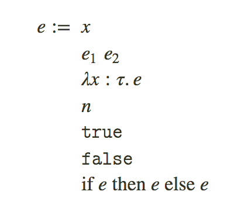

[A type system is a] tractable syntactic method for proving the absence of certain program behaviors by classifying phrases according to the kinds of values they compute. — Benjamin Pierce
http://dev.stephendiehl.com/fun/004_type_systems.html
类型系统是一种形式语言，我们可以在其中描述和限制编程语言的语义。该主题的研究是一个丰富而开放的研究领域，在设计空间中具有许多自由度。
如引言中所述，这是一个非常大的主题，我们将仅涵盖足够多的主题以完成针对我们语言的类型检查器的编写，而不是针对该主题的全面性。
每个人都阅读的经典文章是Types and Programming Languages或TAPL，并更深入地讨论了该主题。实际上，我们将以Haskell的风格非常紧密地遵循TAPL。
Rules
在编程语言语义的研究中，逻辑语句是用特定的逻辑符号编写的。对于我们的目的，property(属性)是关于术语类型的事实。它的写法如下:1
1:𝙽𝚊𝚝
这些事实存在于被称为类型系统的预设话语范围之内，类型系统具有定义，属性，约定以及关于类型和术语的逻辑推论规则。 在给定的系统中，我们将具有关于这些术语的几个属性。 例如:
- (A1)
0是一個自然數 - (A2) 對於一個自然數
n,𝚜𝚞𝚌𝚌(n)也是一個自然數.
给定自然数的几个属性，我们将使用一种表示法，将其链接在一起以形成有关系统中任意项的证明。
在这种表示法中，该行上方的表达式称为先例，而该行下方的表达式称为结论。没有先例的规则是一个公理。
变量n是代表任何自然数的元变量，规则实例是这些元变量的值替换。derivation(推导)是有限深度规则的树。我们写⊢ C表示存在一个推论，其结论为C，证明C是可证明的。
例如⊢ 2: 𝙽𝚊𝚝的推导:
这些推导中还可能存在类型上下文或被寫作Γ的类型環境。
上下文是一系列命名变量映射到关于命名变量的属性。
上下文的逗号运算符通过在现有集合的右侧添加新property(属性)来扩展Γ。
空上下文用∅表示，是该属性链中不包含任何信息的终端元素。
因此，上下文定义为：
这是使用上下文进行加法的类型规则的示例:
在这种情况下，无论上下文如何，property(属性)总是隐含的，我们将缩短表达式。这只是一个词汇约定。
Type Safety(类型安全)
在使用这种逻辑符号对编程语言的语义进行建模的上下文中，我们经常提到语义规则的两个基本規則。
- Statics(静态): 从语言语法中派生出来的语义描述。
- Dynamics(动态): 描述由程序产生的值演化的语义描述。
类型安全性定义为语言的静态和动态之间的等效性。这种等效性由两个与类型和评估语义相关的属性来建模:
- Progress: 如果表达式的类型正确，则要么是一个值，要么可以通过可用的评估规则对其进行进一步评估。
- Preservation: 如果表达式
e的类型为τ，并且被评估为e'，则e'的类型为τ。
Types
type(类型)一词在常见的编程词典中经常被重载。其他语言通常将在动态语言中出现的运行时标签称为类型。一些例子：1
2
3
4
5
6
7
8
9
10
11
12
13
14
15
16
17
18
19# Python
>>> type(1)
<type 'int'>
# Javascript
> typeof(1)
'number'
# Ruby
irb(main):001:0> 1.class
=> Fixnum
# Julia
julia> typeof(1)
Int64
# Clojure
user=> (type 1)
java.lang.Long
虽然这是一个完全可以接受的替代定义，但我们不会走这条路线，而只会将自己纯粹局限于静态类型的讨论，换句话说，就是在运行时之前已知的类型。根据这组定义，许多所谓的动态类型语言通常仅具有单个静态类型。
例如，在Python中，所有静态类型都包含在PyObject中，并且只有在运行时才区分出标签PyTypeObject * ob_type，以产生type的Python概念。
同样，这不是我们将要讨论的类型。这些语言之间的权衡是，它们通常具有琐碎的静态语义，而语言的动态性却往往极其复杂。Haskell和OCaml之类的语言是此设计领域的对立面。
类型通常会写成τ，并且可以包含许多不同的构造，以至于类型语言可能变得与value(值)级别语言一样丰富。
现在，我们仅考虑三种简单类型，两种ground类型(𝙽𝚊𝚝和𝙱𝚘𝚘𝚕)和一种arrow(箭头)类型:
arrow(箭头0类型将是函数表达式的类型，左参数是输入类型，右参数是输出类型。按照惯例，arrow类型将关联到右侧:
在我们将实现的所有语言中，编译期间出现的类型都将被擦除。虽然类型可能出现在计算语义中，但是runtime运行时不能在运行时对值的类型进行分派。
根据定义，类型仅在编译时存在于该语言的静态语义中。
Small-Step Semantics
我们真正感兴趣的正式描述是编程语言中的表达式。编程语言语义由该语言的操作语义描述。操作语义可以看作是对抽象机器的描述，抽象机器按照编程语言的抽象术语进行操作，就像虚拟机按照指令进行操作一样。
我们使用了一个名为”小步骤语义”的框架，在这个框架中，派生过程展示了如何重写组合以生成一个term(术语)，我们可以通过一系列状态更改将该术语计算为一个值。
这是一个框架，通过描述可能的transitions(过渡)类型和terms可能占用的空间，在运行程序之前对程序运行时行为的各个方面进行建模。
我们希望term能够过渡并终止为我们语言中的一個值，而不是像我们之前遇到的那样被”卡住”。
在构造第一个解析器之前，请回顾一下我们的小计算器语言:1
2
3
4
5
6
7
8data Expr
= Tr
| Fl
| IsZero Expr
| Succ Expr
| Pred Expr
| If Expr Expr Expr
| Zero
表达式语法如下:
这种小语言的小步评估语义由以下9条规则唯一定义。They describe each step that an expression may take during evaluation which may or may not terminate and converge on a value.(它们描述了表达式在评估过程中可能采取的可能终止或收敛于某个值的每个步骤。)
我们的解释器的评估逻辑只是通过预定义的评估规则来简化表达式，直到表达式达到标准形式(一個值)或陷入困境为止。1
2
3
4
5
6
7nf :: Expr -> Expr
nf t = fromMaybe t (nf <$> eval1 t)
eval :: Expr -> Maybe Expr
eval t = case isVal (nf t) of
True -> Just (nf t)
False -> Nothing -- term is "stuck"
我们语言中的值定义: 文字数或布尔值.1
2
3
4
5isVal :: Expr -> Bool
isVal Tr = True
isVal Fl = True
isVal t | isNum t = True
isVal _ = False
以applicative形式编写的评估规则与我们的评估逻辑之间存在明显的对应关系。1
2
3
4
5
6
7
8
9
10
11
12
13
14-- Evaluate a single step.
eval1 :: Expr -> Maybe Expr
eval1 expr = case expr of
Succ t -> Succ <$> (eval1 t)
Pred Zero -> Just Zero
Pred (Succ t) | isNum t -> Just t
Pred t -> Pred <$> (eval1 t)
IsZero Zero -> Just Tr
IsZero (Succ t) | isNum t -> Just Fl
IsZero t -> IsZero <$> (eval1 t)
If Tr c _ -> Just c
If Fl _ a -> Just a
If t c a -> (\t' -> If t' c a) <$> eval1 t
_ -> Nothing
正如我们之前所注意到的，我们可以构造出各种病态的表达方式，这些表达方式会被卡住。
查看计算规则，每一个受保护的模式匹配都提示我们，当布尔值用于数字的位置时，哪里可能”出错”，反之亦然。
我们希望在编译时静态地强制执行这个不变量，因此我们将引入一个小型类型系统来处理现有术语的两种语法类别。除了箭头类型，我们还添加了自然数的抽象类型和布尔值的类型:
在Haskell中实现为以下数据类型:1
2
3
4data Type
= TBool
| TNat
| TArr Type Type
現在的类型規則:
这些规则限制了所有可能程序的空间。
这是一个更复杂的展示，但这一制度也有progress(进步)和preservation(保存)。如果一个term(术语)现在是类型良好的，那么它将始终计算为一个值，并且在计算时不会”出错”。
为了检查表达式的格式是否良好，我们实现了一段称为类型检查器的逻辑，它确定term是否具有定义良好的类型(根据类型规则)，如果有，则返回该类型，如果没有，则返回失败(除非没有)。1
2
3
4
5
6
7
8
9
10
11
12
13
14
15
16
17
18
19
20
21
22
23
24
25
26
27
28
29
30
31
32
33
34
35
36
37
38
39
40
41type Check a = Except TypeError a
data TypeError
= TypeMismatch Type Type
check :: Expr -> Either TypeError Type
check = runExcept . typeof
typeof :: Expr -> Check Type
typeof expr = case expr of
Succ a -> do
ta <- typeof a
case ta of
TNat -> return TNat
_ -> throwError $ TypeMismatch ta TNat
Pred a -> do
ta <- typeof a
case ta of
TNat -> return TNat
_ -> throwError $ TypeMismatch ta TNat
IsZero a -> do
ta <- typeof a
case ta of
TNat -> return TBool
_ -> throwError $ TypeMismatch ta TNat
If a b c -> do
ta <- typeof a
tb <- typeof b
tc <- typeof c
if ta /= TBool
then throwError $ TypeMismatch ta TBool
else
if tb /= tc
then throwError $ TypeMismatch ta tb
else return tc
Tr -> return TBool
Fl -> return TBool
Zero -> return TNat
Observations
我们以前在無類型语言中遇到的病态术语现在完全没有表达能力，并且在编译时被拒绝。1
2
3
4
5
6
7
8
9
10
11
12
13
14
15
16
17
18
19
20Arith> succ 0
succ 0 : Nat
Arith> succ (succ 0)
succ (succ 0) : Nat
Arith> if false then true else false
false : Bool
Arith> iszero (pred (succ (succ 0)))
false : Bool
Arith> pred (succ 0)
0 : Nat
Arith> iszero false
Type Mismatch: Bool is not Nat
Arith> if 0 then true else false
Type Mismatch: Nat is not Bool
很好，我们已经使整个非法程序类都无法表示。让我们做更多的事情！
Simply Typed Lambda Calculus
Church和Curry的simply typed lambda calculus(STLC)是lambda演算的扩展，该演算用类型项注释每个lambda绑定器。STLC是明确类型化的，所有类型都直接出现在绑定器上，要确定范围内任何变量的类型，我们只需要遍历其enclosing包围范围即可。
最简单的STLC语言是这三个terms(术语)，但是，我们将添加数字和布尔文字项，以便我们编写有意义的示例。

我们可以為我們的語言考虑一种非常简单的类型系统，它由Int和Bool类型以及function类型组成。
Type Checker
类型规则非常简单，并且我们再次获得了不错的属性，即每个语法术语与类型规则之间存在一对一的映射。
- T-Var: 变量只是从上下文中提取。
- T-Lam: 在推断主体时
lambdas将类型化变量引入到环境中。 - T-App: 将类型为
t1 -> t2的lambda应用于类型为t1的值将产生类型为t2的值。
评估规则描述了值在其他值之间转换的本质，并确定了程序的运行时行为。
由于我们现在有了lambda范围变量的概念，因此我们将在类型规则中实现一个以Γ形式表示的类型环境Env。1
2
3
4
5
6
7
8
9
10
11
12
13
14type Env = [(Name, Type)]
extend :: (Name, Type) -> Env -> Env
extend xt env = xt : env
inEnv :: (Name, Type) -> Check a -> Check a
inEnv (x,t) = local (extend (x,t))
lookupVar :: Name -> Check Type
lookupVar x = do
env <- ask
case lookup x env of
Just e -> return e
Nothing -> throwError $ NotInScope x
类型检查器将是ExceptT + Reader monad的转换器，其中读取器将保持类型环境。
简单类型的lambda演算类型检查器有三种可能的故障模式:
- 我们尝试
unify(统一)两种不同类型。 - 我们尝试对参数应用非函数。
- 引用变量不在范围内。
1
2
3
4
5
6data TypeError
= Mismatch Type Type
| NotFunction Type
| NotInScope Name
type Check = ExceptT TypeError (Reader Env)
这里的语法模式与其等效的类型判断之间存在直接等价关系。通常，情况并非总是如此。类型检查器的实现如下：1
2
3
4
5
6
7
8
9
10
11
12
13
14
15
16
17
18
19
20check :: Expr -> Check Type
check expr = case expr of
Lit (LInt{}) -> return TInt
Lit (LBool{}) -> return TBool
Lam x t e -> do
rhs <- inEnv (x,t) (check e)
return (TArr t rhs)
App e1 e2 -> do
t1 <- check e1
t2 <- check e2
case t1 of
(TArr a b) | a == t2 -> return b
| otherwise -> throwError $ Mismatch t2 a
ty -> throwError $ NotFunction ty
Var x -> lookupVar x
Evaluation(評估)
从根本上说，类型化lambda演算的计算与非类型化lambda演算没有什么不同，也不可能有什么不同，因为类型的语法添加纯粹是一个静态构造，根据定义，在运行时不能有任何表现。
唯一的區別是: 简单类型的lambda演算所接受的程序比非类型的lambda演算所允许的程序少得多(即类型化的更严格)。
静态类型化语言的编译的基本思想是，可以通过擦除类型信息但保留类型化程序的评估语义，将类型化程序转换为未类型化程序。如果我们的程序具有类型安全性，则它永远不会在运行时”出错”。
当然反过来是不正确的，没有”出错”的程序不一定是类型正确的，尽管我们是否可以证明一个不良类型的程序是否不会出错是一个正交的问题。我们作为静态类型语言实现者的游戏基本上是一种限制：我们會占据所有程序的空间，并在我们愿意考虑的程序讨论范围内划出一条大界限，因为這些是我们唯一可以证明其属性的程序。
类型正确的程序不会出错，但是，并非每个不会出错的程序都类型正确。 展示不会出错但在任何可判定类型系统中类型错误的程序很容易。许多这样的程序很有用，这就是为什么像Erlang和Lisp这样的动态类型语言很受欢迎的原因。 – Simon Peyton Jones
权利总是有代价的。使用一个系统，您可以做更多的事情。在另一种方法中，您可以更多地谈论程序可以做的事情。语言设计学科的基础艺术是平衡两者，以找到正确的功率重量比。
Observations
嘗試一些簡單的例子:1
2
3
4
5
6
7
8
9
10
11
12
13Stlc> (\x : Int . \y : Int . y) 1 2
2
Stlc> (\x : (Int -> Int). x) (\x : Int . 1) 2
1
Stlc> (\x : Int . x) False
Couldn't match expected type 'Int' with actual type: 'Bool'
Stlc> 1 2
Tried to apply to non-function type: Int
Stlc> (\x : Int . (\y : Int . x))
<<closure>>
Notation Reference(符号參考)
此处介绍的符号将在Haskell编译器的整个构建过程中使用。作为参考，这里列出了我们将使用的每种符号约定。其中一些术语尚未引入。